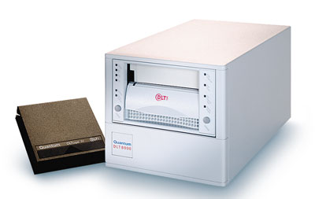

Андрей Борзенко
Сегодня, когда бизнес все более и более полагается на информационные технологии, информация становится одним из наиболее важных активов предприятия и определяет его конкурентоспособность. Благодаря мощным технологиям многие компании, работающие на современном глобальном рынке, смогли значительно повысить показатели эффективности, продуктивности и прибыльности. Одна из наиболее сложных проблем, которые встают сегодня перед ИТ-менеджерами, - огромный объем распределенных данных, циркулирующих в информационной системе. За последние годы объем хранимой на серверах информации резко возрос, и даже в небольших компаниях счет идет уже на сотни гигабайт. Невозможность эффективно управлять данными может отрицательно сказаться на прибыльности предприятия и ограничить его способность к росту. Поэтому передача данных, их хранение, защита и управление ими в условиях постоянного роста объема и усложнения структуры данных составляют сейчас одну из основных проблем для бизнеса.
К сожалению, большинство руководителей предприятий часто не отдают себе отчета в важности резервного копирования и архивирования данных. Более того, они не хотят прислушиваться к доводам специалистов. Последствия такого поведения часто просто непредсказуемы. Дело в том, что потеря или искажение данных может привести к самым катастрофическим последствиям, среди которых не только потеря денег и времени, но и престижа компании.
Вообще говоря, вопросы стратегии в области страхового копирования данных, очевидно, не могут решаться только техническими службами компании. Точно так же на самом высоком уровне должно приниматься решение, какая именно информация представляет наибольшую ценность и как долго требуется хранить копии тех или иных данных. Однажды приняв решение о стратегии резервирования, важно описать ее и сделать неотъемлемой частью технической политики своей компании.
Выбор систем резервирования весьма широк, но в любом случае, принимая решение, придется пойти на какой-то компромисс. В результате может потребоваться реализовать несколько стратегий резервирования, а значит, придется обеспечивать поддержку множества накопителей, пакетов специализированных программ и типов носителей информации. Например, предприятию может потребоваться резервное копирование своей финансовой информации, включая все файлы бизнес-приложений, распределенные базы данных, в которых хранится такая информация, а также отчетную документацию и презентации для финансового анализа.
Организация процесса резервного копирования и архивирования - неотъемлемая часть политики защиты информации. От правильного выбора технических и программных средств резервного копирования и архивирования, определения оптимальной топологии подключения этих устройств зависит эффективность защиты и восстановления данных, жизненно важных для функционирования организации. Особую эффективность и защиту инвестиций обеспечивают автоматизированные системы резервного копирования и архивирования информации, с помощью которых автоматизируется ведение этих процессов со всех необходимых серверных систем и персональных компьютеров на устройства с автоматической сменой носителей. Заметим, что выбор системы резервного копирования или архивирования - задача далеко не простая: требуется учитывать множество параметров, связанных как с имеющимся на предприятии парком компьютеров и ПО, так и с возможностями аппаратного обеспечения резервирования и затратами на эксплуатацию всего комплекса резервного копирования.
Причины потерь информации
Приведем лишь несколько причин, которые могут привести к частичной или даже полной потере невосполнимых данных. Несмотря на то, что за последнее время надежность аппаратных средств значительно увеличилась, аварии и сбои тем не менее по-прежнему нередки. В частности, это касается работы дисковых накопителей. Не секрет, что в операционных системах и прикладном ПО практически всегда имеются ошибки, которые при определенных условиях могут также привести к порче данных. Весьма распространена такая причина потери информации (особенно в системах Windows), как различные вирусы и "троянские кони"; они, как показывает практика, не раз приводили к столь серьезным последствиям, как утрата или несанкционированное изменение информации. По статистике, одна из самых распространенных причин потери информации - это непреднамеренное уничтожение данных. В результате ошибок пользователей или обслуживающего персонала теряется до 75% информации. А вот результатом неверного выбора или конфигурирования системы безопасности информационной системы предприятия может стать преднамеренное уничтожение информации в результате хакерских атак злоумышленников.
Разумеется, перечисленные причины вовсе не обязательно требуют страхового копирования на внешние носители; с некоторыми из них можно бороться другими способами. Но если от аппаратных сбоев, например, могут защитить дисковые массивы (или программные продукты, поддерживающие зеркалирование), а от проблем с электропитанием - источники бесперебойного питания, то от ошибки оператора (от такой, как ошибочное удаление файлов) может защитить только резервная копия. Специальные меры защиты данных требуются и на случай пожаров, наводнений или других обстоятельств, которые могут привести к одновременному уничтожению аппаратуры, носителей информации и других элементов информационной системы. В этом случае имеет смысл создавать удаленные резервные информационные системы. Полные копии данных позволят быстро включить эти системы в работу.
Преимущества ленточных накопителей
В настоящее время нет недостатка в системах страхового копирования данных, но реально приходится выбирать между устройствами с последовательной организацией данных (ленточные накопители) или с произвольным доступом (дисковые накопители). При выборе следует принять во внимание такие факторы, как тип требуемого резервирования и восстановления информации, их номинальная скорость, максимальная емкость носителей и устройства в целом, начальная стоимость устройства и стоимость владения им, надежность всей системы, а также стоимость самого носителя и т. д.
| Ленточные носители.
|
Именно ленточные накопители по-прежнему остаются самым универсальным, дешевым и, как следствие, предпочтительным средством защиты целостности данных. Ряд аналитиков считают, что именно ленточные накопители вступили в третью эпоху своего существования. Напомним, что своему появлению эти устройства во многом обязаны корпорации IBM, которая в 1952 г. выпустила на компьютерный рынок первый ленточный накопитель. Начало второй эпохи - в 1987 г. - связано с появлением автоматизированных устройств; большую роль в их выпуске сыграли корпорации Exabyte и StorageTek. Третья эпоха должна ассоциироваться уже с "разумными" (intelligent) устройствами. Это стало насущной необходимостью, поскольку теперь каждый год в мире создается от 1 до 2 экзабайт (десять в восемнадцатой степени!) данных. Если говорить о цене хранения на ленте, то к 2007 г. она, по некоторым оценкам, должна упасть до 0,0005 цента за мегабайт информации. Это при том, что надежность подобных устройств уже сейчас достигает 200-300 тыс. ч безотказной работы. По прогнозам, в ближайшие пять лет емкость картриджа типового ленточного устройства достигнет 800 Гбайт, а скорость передачи данных превысит 100 Мбайт/с.
|  | Накопитель на магнитной ленте.
|
Отметим также, что внешние накопители на магнитных лентах часто можно использовать в системах иерархического хранения данных (Hierarchical Storage Management, HSM). В этих системах медленные, но емкие внешние накопители обычно выступают в качестве второго или третьего уровня хранения. Дело в том, что концепция структурированного хранения подразумевает организацию иерархической структуры устройств хранения информации. На первом (верхнем) уровне находятся жесткие диски, а на нижних уровнях - магнитооптические и ленточные накопители. Часть жесткого диска и магнитооптические и/или ленточные накопители объединяются в единый логический диск, на котором обычно хранят редко используемую информацию. Система структурированного хранения может включать в себя как устройства оперативного доступа, работающие без вмешательства оператора (жесткие диски и библиотеки магнитооптических дисков или ленточных носителей), так и одиночные накопители, в которых носители заменяются оператором вручную. Назначение структурированного хранения - удешевление хранения редко используемых данных. При физическом перемещении файла между устройствами разных уровней его логическое местоположение в файловой системе сервера остается неизменным. Приложения обращаются к файлам по их логическому местоположению. На носители более низких уровней обычно перемещаются файлы, к которым пользователи не обращались в течение определенного времени. Перемещение файлов в системе структурированного хранения организуется таким образом, чтобы объем свободного пространства на дисках серверов поддерживался на заданном уровне.
Эволюция страхового копирования
Вообще говоря, существует два подхода к вопросу резервирования данных: можно резервировать информацию, хранящуюся на сервере, или же обеспечить соответствующими средствами рабочие места клиентов. В первом случае, как правило, сохраняется вся находящаяся на сервере информация, в том числе и пользовательские данные. Объем информации, которая становится недоступной в случае аварийного останова системы или по причине стихийных бедствий, обычно исчисляется десятками и сотнями гигабайт.
Второй подход, заключающийся в сохранении данных с каждой рабочей станции, обычно не применяется в крупных корпорациях (за исключением особых случаев). Дело в том, что обычно речь идет о небольшом объеме информации (быть может, десятки мегабайт). Однако из практики известно, что большинство сотрудников не любят тратить время на организацию процесса резервирования своих данных. Поэтому лучше все же потребовать от пользователя хранить свои данные на сервере. В этом случае администратор системы несет ответственность только за те данные, которые хранятся на сервере, а для резервирования критически важной информации на некоторых рабочих станциях используется специальное оборудование.
В базовой схеме копирования (рис. 1) каждый сервер соединен с собственным устройством страхового копирования (обычно со стримером через шину SCSI). Напомним, что стример позволяет обслуживать только один носитель и не имеет никаких средств автоматизации подачи и смены картриджей/кассет. В этом случае от администратора требуется загрузить приложение для страхового копирования на каждый сервер. Контроль работы приложения по этой схеме также выполняется локально. Носители для каждого устройства заменяются вручную, что требует постоянного внимания со стороны персонала.
| Рис. 1. Базовая схема страхового копирования.
|
С появлением в программном обеспечении агентов страхового копирования ленточные накопители уже необязательно непосредственно присоединять к каждому серверу. Такие программные агенты передают данные через сеть на один из серверов, который занимается страховым копированием. Так реализуется централизованная схема копирования (рис. 2). Использование автоматизированных ленточных библиотек высокой емкости облегчает решение проблемы больших объемов информации и ручных операций при смене носителей для страхового копирования.
| Рис. 2. Централизованная схема страхового копирования.
|
Централизованная организация позволяет сократить затраты на обслуживание резервного копирования и управление им, повысить эффективность использования аппаратных компонентов системы, уменьшить количество устройств копирования. Она обеспечивает единообразие процесса создания резервных копий для всей информационной системы, мониторинг самого процесса и диагностику возникающих проблем, облегчает проверку возможности восстановления с резервных копий.
Централизация ресурсов и выполнение копирования по сети могут устранить ряд недостатков предыдущих систем, но, к сожалению, вносят собственные. Наиболее очевидный из них - это конфликт обычного сетевого трафика (электронная почта, файловый сервис, служба имен и т. д.) с трафиком системы резервного копирования (для сравнения в таблице приведены скорости передачи данных для основных сетевых протоколов). Выполнение копирования в специально отведенные интервалы времени может показаться привлекательным, но при этом приходится приостанавливать рабочие процессы на время копирования. С появлением компаний, которым необходимо поддерживать круглосуточную доступность своих информационных систем (это, к примеру, телекоммуникационные компании и Интернет-провайдеры), выделение определенного времени только для копирования стало неприемлемым.
Скорости передачи для различных протоколов
| Протокол | Максимальное значение, Гбайт/ч | Типичное значение, Гбайт/ч |
| 10Base-T | 3,6 | 2 |
| 100Base-T | 36 | 15-20 |
| Fibre Channel | 360 | 280 |
Будущая модель организации памяти в системах уровня всего предприятия рассматривается сегодня как некоторая дополнительная услуга для пользователей в сети. В этой модели диски, ленты, оптические устройства памяти и ПО рассматриваются не как отдельные компоненты, а как составные части интегрированного решения. Для устранения проблем, связанных с конфликтом трафиков, можно использовать копирование по сетям хранения данных (рис. 3). При этом локальные сети освобождаются от передачи больших объемов копируемых данных. Кроме того, устройства, разделяемые в сетях хранения данных, позволяют выполнять копирование непосредственно с дискового массива на устройство страхового копирования, снижая нагрузку и на управляющий сервер. Использование сетей хранения данных (Storage Area Networks, SAN) стало новым этапом развития систем резервного копирования.
| Рис. 3. Использование SAN для страхового копирования.
|
Вообще говоря, появление сетей хранения данных сильно отразилось на средствах резервного копирования. Наиболее привлекательные характеристики SAN в данном случае - это высокая пропускная способность сети (этот фактор еще более существен при централизации хранения данных, росте их объема и разнообразия), ее независимость от локальной сети (стремление уменьшить возможные потери данных заставляет чаще выполнять резервное копирование, увеличивая при этом нагрузку на сеть), возможность размещать узлы на большом расстоянии друг от друга (необходимое условие при защите от пожара и т. п.). Существует возможность разгрузить не только локальную сеть, но и серверы, если передавать данные непосредственно с дисковых массивов на устройства резервного копирования.
Технология Fibre Channel, базовая при организации SAN, обладает рядом преимуществ в качестве интерфейса устройств массовой памяти. Одно из основных достоинств этой технологии - высокая скорость передачи информации. В частности, Fibre Channel обеспечивает максимальную пропускную способность передачи данных 100 Мбайт/с и связь на расстоянии до 500 м при использовании многомодовых кабелей. Организация интерфейса по принципу петли с разделяемым доступом (Fibre Channel Arbitrated Loop) допускает одновременное подключение до 127 устройств.
Автоматизация процедур
Потребность в страховом копировании привела к появлению самых разнообразных средств его выполнения, как аппаратных, так и программных. Существует множество форматов записи, моделей картриджей, устройств записи, роботизированных библиотек; кроме того, имеются как простейшие средства управления копированием, так и самостоятельные системы, позволяющие управлять операциями защиты данных в масштабах большой корпорации с распределенными филиалами. Есть несколько типов устройств, в той или иной степени позволяющих автоматизировать работу системы резервного копирования или повысить скорость передачи данных: это стекеры (stackers), автозагрузчики (autoloaders), массивы RAIT (Redundant Arrays of Independent Tape) и библиотеки RAIL (Redundant Arrays of Independent Libraries).
Cтекер представляет собой устройство с одним накопителем и несколькими носителями. Носители помещаются в корпус стекера заранее и подаются в накопитель в строго определенном порядке. Они устанавливаются в специальных лотках, а для подачи носителей в накопитель служит специальный механизм, называемый роботом. Стекеры применяются главным образом для резервного копирования, когда вся копируемая информация не помещается на один носитель. Они плохо подходят для архивации, так как для них сложно организовать популярные схемы ротации носителей. Надо заметить, что стекеры пользуются все меньшей популярностью, большинство администраторов предпочитают иметь дело с автозагрузчиками и библиотеками.
Автозагрузчик во многом похож на стекер. Он также имеет один накопитель и несколько носителей, устанавливаемых в его корпус. Однако носители могут подаваться в накопитель в произвольном порядке, поэтому данное устройство может использоваться не только для резервного копирования, но и для архивирования и в системах HSM.
Фото
| Автозагрузчик.
|
Библиотека представляет собой хранилище с большим количеством носителей. Библиотеки обычно имеют несколько накопителей, вследствие чего скорость обмена информацией значительно повышается. Загрузка носителей в таких библиотеках может происходить по двум разным схемам. Согласно одной из них, любой носитель может быть загружен в любой накопитель, тогда как другая схема предполагает, что за накопителем закрепляется определенная часть общего хранилища носителей. Выпускаемые некоторыми производителями библиотеки можно объединять друг с другом в одно общее устройство.
| Ленточная библиотека.
|
Автозагрузчики и библиотеки выпускаются практически для всех популярных типов устройств хранения на магнитных лентах. Библиотеки эффективны для централизованного резервного копирования (большой емкости) гетерогенных серверов на общую систему хранения. Основные достоинства в этом случае - очень высокая скорость копирования и восстановления информации (до сотен гигабайт в час), большая емкость (до десятков терабайт), надежность хранения и минимальная удельная стоимость хранения (в расчете на один мегабайт данных).
Массив независимых накопителей состоит из нескольких приводов лент в одном корпусе, причем каждый из них обслуживает один-единственный носитель. Схема работы RAIT аналогична дисковому массиву RAID. RAIT значительно повышает производительность операций резервного копирования и архивирования, поскольку накопители работают параллельно. Кроме того, RAIT обеспечивает повышенную отказоустойчивость, так как он ориентируется на спецификации RAID. Основные недостатки массивов RAIT связаны с невысокой емкостью и невозможностью ротации носителей. Технологию RAIT можно реализовать и программными методами, за счет группирования нескольких автозагрузчиков или библиотек.
Методы страховки информации
В основе всех способов, программ и устройств, предназначенных для защиты и восстановления критических данных, лежит принцип записи и хранения избыточной информации.
Резервное копирование
Под резервным копированием обычно понимают создание копий файлов с целью быстрого восстановления работоспособности системы в случае возникновения аварийной ситуации. Эти копии хранятся на носителях (которые нередко называют резервными) определенный срок и затем перезаписываются. Таким образом, с ростом объема информации число резервных носителей увеличивается относительно медленно. Резервному копированию, как правило, подлежат данные, часто требующиеся пользователям. Эти данные можно определить по тому, какой период времени прошел со дня последнего обращения к их файлам. Для надежной защиты данных рекомендуется иметь по три резервные копии последних редакций файлов.
Резервное копирование может быть полным, инкрементальным и дифференциальным. При полном копировании создается копия всех данных, подлежащих резервированию. Недостаток этой процедуры - она требует много времени и ведет к большому расходу магнитной ленты, а достоинство - самая высокая надежность и относительно быстрое восстановление информации из одной полной копии (поскольку для этого достаточно только одного записанного образа). Полное копирование служит отправной точкой для других методов.
При инкрементальном копировании дублируются лишь те файлы, которые были созданы или изменены после последнего полного, дифференциального или инкрементального копирования. Иными словами, при использовании инкрементального копирования первая запись на ленту - это полная копия. При второй записи на ленту помещаются только те файлы, которые были изменены со времени первой записи. На третьем этапе копируются файлы, модифицированные со времен второго этапа, и т. д. Это самый быстрый метод копирования, требующий минимального расхода магнитной ленты. Однако восстановление информации при инкрементальном копировании самое длительное: информацию необходимо сначала восстановить с полной копии, а затем последовательно со всех последующих. Тем не менее это самый популярный метод резервного копирования, поскольку полное восстановление информации - все-таки достаточно редкая процедура в нормально работающей системе.
При дифференциальном копировании дублируются только файлы, созданные или измененные со времени проведения последнего полного копирования. И чем больше это время, тем дольше будет осуществляться дифференциальное копирование. Иными словами, первая запись на ленту -это опять-таки полная копия. На последующих этапах копируются только файлы, которые изменились со времени проведения полного копирования. Само копирование в этом случае занимает больше времени, чем инкрементальное копирование. В случае краха системы администратору для восстановления данных придется задействовать последние полную и дифференциальную копии.
Обычно для достижения компромисса между продолжительностью резервного копирования данных и временем их восстановления выбирается схема, согласно которой раз в неделю проводится полное копирование и ежедневно - инкрементальное. Главная проблема при инкрементальном и дифференциальном копировании - это выбор критерия для проверки факта изменения файла. К сожалению, ни один из известных критериев не может полностью гарантировать это условие.
Самый распространенный способ - использование архивного атрибута файлов (archive). При создании или модифицировании файла прикладные программы автоматически выставляют данный атрибут. При резервном копировании он принимает прежнее значение. Поэтому теоретически система резервного копирования может таким образом определить, что файл еще не копировался на ленту. Но ряд прикладных программ принудительно восстанавливают этот атрибут при работе с файлами. Таким образом, система резервного копирования будет считать, что у файла есть копия на ленте, хотя это и не так. В результате может получиться, что файлы останутся вообще без резервных копий. В некоторых случаях можно сравнивать время последнего обращения к файлу или время его модификации с каким-то эталонным временем, например, временем предыдущего копирования. К сожалению, и этот критерий не идеален, хотя, как правило, он более эффективен, чем контроль за архивным атрибутом. Проверка размера файла используется еще реже, у этого способа еще больше недостатков, чем у других критериев. Конечно, лучшим вариантом был бы одновременный учет нескольких или всех названных критериев. Но такой подход могут предложить только самые мощные системы резервного копирования.
Архивирование
Под архивным копированием обычно понимают процесс создания копий файлов, предназначенных для бессрочного или долговременного хранения. Это процесс получения "слепка" файлов и каталогов в том виде, в котором они располагаются на первичном носителе (обычно диске) в данный момент времени. Носители, на которые переносятся данные, называют архивными. Периодическое проведение архивного копирования позволит иметь копии нескольких разных версий одних и тех же файлов. Впрочем, особо важные файлы иногда помещают в архив независимо от времени их последней модификации. Обычно считается, что для надежности хранения нужно иметь 2-3 архивные копии всех редакций файлов, подлежащих архивированию.
В принципе архивное копирование тоже может быть полным, инкрементальным и дифференциальным, однако процесс архивирования обычно организован так, что делаются только полные копии, к которым, как правило, через определенное время добавляют инкрементальные. Дифференциальное архивное копирование обычно не встречается. Как показывает практика, количество архивных носителей на предприятии довольно быстро растет.
Набором носителей информации называется группа резервных или архивных носителей, периодически используемая в процессе копирования. Для повышения надежности хранения информации не следует помещать более одной копии одного и того же файла на один носитель или набор носителей. Таким образом, чтобы иметь, например, три копии, нужно задействовать три разных набора носителей. При этом для защиты данных от всевозможных катастроф и стихийных бедствий один из наборов следует хранить в удаленном месте.
Отметим, что в отличие от резервного копирования архивирование обычно выполняется над данными, ассоциированными с конкретным проектом, а не с системой в целом.
Для архивов характерен очень большой объем хранимой информации, поэтому система архивирования должна обеспечивать быстрый и удобный поиск файлов по версиям и времени создания, а также поддерживать автоматическое удаление файлов по прошествии заданного времени. Здесь поддержка автоматических библиотек еще более важна, чем в случае резервного копирования.
Как правило, резервное копирование и архивирование лучше всего выполнять ночью и в нерабочие дни. Это позволяет максимально ускорить процесс копирования и не накладывает на пользователей специфических ограничений. Дело в том, что, хотя многие серьезные программы резервирования могут обрабатывать открытые файлы, их резервное копирование значительно замедляет весь процесс. Кроме того, резервное копирование сильно загружает процессоры серверов, заметно снижая производительность сети.
Схемы ротации
Хотя резервное копирование и архивирование опираются на одни и те же принципы и, более того, любой программный продукт позволяет выполнять как функции резервного копирования, так и архивирования, тем не менее оба эти процесса имеют свои особенности. Если цель резервного копирования - сохранить текущее состояние системы, то при архивировании задача состоит в долгосрочном хранении информации, чтобы данные можно было извлечь, даже если они созданы и месяц, и год назад. Нередко архивирование предполагает перенос всех данных по завершении какого-то проекта на внешние носители, чтобы освободить место на винчестерах. Поэтому при страховом копировании важно выработать надлежащую схему ротации носителей информации с тем, чтобы можно было не только быстро сохранить данные или восстановить информацию, но и чтобы носители на каждом временном этапе содержали полный архив данных.
Смена рабочего набора носителей в процессе копирования называется их ротацией. В настоящее время наиболее широко используется несколько схем ротации, например, "дед-отец-сын" (grandfather-father-son) или "ханойская башня" (Tower of Hanoi). Простая ротация подразумевает, что некий набор лент используется циклически. Например, цикл ротации может составлять неделю, тогда отдельный носитель выделяется для определенного рабочего дня недели. Полная копия делается в пятницу, а в другие дни - инкрементальные (или дифференциальные) копии. Таким образом, для недельного цикла достаточно иметь пять носителей (если копирование происходит только в рабочие дни и емкости одного носителя хватает для копии). После завершения цикла все повторяется сначала, и запись производится на те же самые носители, хотя иногда полные (пятничные) копии сохраняют в качестве архива. Недостаток данной схемы - она не очень подходит для ведения архива, даже если сохранять полные копии, поскольку количество носителей в архиве быстро увеличивается. Кроме того, запись (во всяком случае, инкрементальная/дифференциальная) проводится на одни и те же носители, что ведет к их значительному износу и, как следствие, увеличивает вероятность отказа.
Схема "дед-отец-сын" имеет иерархическую структуру и предполагает использование комплекта из трех наборов носителей. Раз в неделю делается полная копия дисков компьютера, ежедневно же проводится инкрементальное (или дифференциальное) копирование. Дополнительно раз в месяц проводится еще одно полное копирование. Набор для ежедневного инкрементального копирования называется "сыном", для еженедельного - "отцом", для ежемесячного - "дедом". Состав ежедневного и еженедельного набора постоянен. В ежедневном наборе свой носитель (их может быть несколько, если объем информации превышает объем одного носителя) закреплен за каждым рабочим днем (кроме пятницы), а в случае еженедельного набора - за каждой неделей месяца по порядку (т. е. данный набор должен содержать не менее четырех носителей). Ежемесячные носители обычно заново не используются и откладываются в архив. Таким образом, по сравнению с простой ротацией в архиве содержатся только ежемесячные копии плюс последние еженедельные и ежедневные копии. Недостаток данной схемы состоит в том, что в архив попадают только данные, имевшиеся на конец месяца. Как и при схеме простой ротации, носители для ежедневных копий подвергаются значительному износу, в то время как нагрузка на еженедельные копии сравнительно невелика.
Схема "ханойская башня" призвана устранить некоторые из перечисленных недостатков, но, правда, имеет свои собственные. Схема построена на применении нескольких наборов носителей, их количество не регламентируется, хотя обычно ограничивается пятью-шестью. Каждый набор предназначен для недельного копирования, как в схеме простой ротации, но без изъятия полных копий. Иными словами, отдельный набор включает носитель с полной недельной копией и носители с ежедневными инкрементальными (дифференциальными) копиями. Специфическая проблема схемы "ханойская башня" - ее излишняя сложность.
Еще одна схема ротации называется "10 наборов" и, как следует из названия, рассчитана на десять наборов носителей. Период из сорока недель делится на десять циклов. В течение цикла за каждым набором закреплен один день недели. По прошествии четырехнедельного цикла номер набора сдвигается на один день. Иными словами, если в первом цикле за понедельник отвечал набор номер 1, а за вторник - номер 2, то во втором цикле за понедельник отвечает набор номер 2, а за вторник - номер 3. Такая схема позволяет равномерно распределить нагрузку, а следовательно, и износ между всеми носителями.
Заключение
Как полагает большинство экспертов, дальнейшее развитие средств страхового копирования пойдет по пути сокращения времени выполнения операций сохранения и восстановления информации, повышения надежности хранения данных и расширения возможностей масштабирования, а также обеспечения большей совместимости и лучшей управляемости. Продолжающаяся тенденция к централизации обработки и хранения данных потребует повышения производительности и надежности используемых систем. Экспоненциальный рост объема цифровой информации станет серьезным испытанием для сетей передачи данных и систем ввода-вывода. Тем не менее широкое внедрение сетей хранения данных и интеллектуальных накопителей позволит эффективно решать возникающие задачи.